SKEP PLATFORM
중장비·인력 투입관리
스마트 안전 플랫폼
견적·계약부터 서류검증, 작업계획서 자동화, 투입·정산,
그리고 스마트워치 기반 작업자 안전까지 — 현장의 전 과정을 하나로.
서류 OCR 자동검증·정부기관 진위확인
작업계획서 자동 생성
NFC 법정 안전점검
스마트워치 안전 (특허 출원 준비)
원청 실시간 관제
SKEP
현장의 문제, SKEP의 답
😰 지금의 현장
- 견적·계약·서류·투입이 전부 전화·이메일·수기 — 담당자 기억에 의존
- 서류심사는 다운로드→출력→대조 반복, 진위 확인은 사실상 생략
- 장비·인원이 바뀔 때마다 작업계획서 재작성 — 번거로워 기존 업체만 고집(락인)
- 일일 안전점검이 형식화 — 작업자가 일괄 체크, 점검원은 서명만
- 중대재해 발생 시 "고지했고 관리했다"를 입증할 기록 부재
💡 SKEP 도입 후
- 서류 업로드 즉시 OCR 추출 + 정부기관 진위검증 + 만료 자동관리
- 발주사(BP)는 웹에서 원스톱 심사 — 열람·승인·후속조치가 한 화면
- 작업계획서는 검증된 서류에서 자동 생성 — 교체 시 원클릭 재발행
- NFC 태그 없이는 점검표가 열리지 않는 법정점검 강제 구조
- 모든 고지·확인·대응이 타임스탬프로 기록 — 증거사슬 자동 완성
6개 주체를 하나의 흐름으로
원청(발주 건설사)·BP사(협력 시공사)·장비공급사·인력공급사·안전점검회사·작업자 — 각자의 화면과 권한으로 같은 데이터를 봅니다. 원청은 관제만, 공급사는 자기 자원만, 작업자는 본인 것만.
견적·계약단가 5분류 확정
서류심사OCR·진위검증
작업계획서자동 생성·서명
반입·투입사전판정 게이트
일일확인디지털 서명
정산월간 원장 자동
견적 없이 서류심사부터 바로 시작할 수도 있습니다 — 이미 돌아가는 현장에 즉시 도입 가능(기존 통과 자원 소급 등록·구두승인 기록 지원).
2
SKEP
① 서류 자동검증 — 올리는 순간 끝납니다
등록증·면허증·자격증을 사진으로 올리면: 4모서리 자동 정렬 → 필드 자동 추출(OCR) → 정부기관 진위검증 → 만료일 자동 등록까지 한 번에.
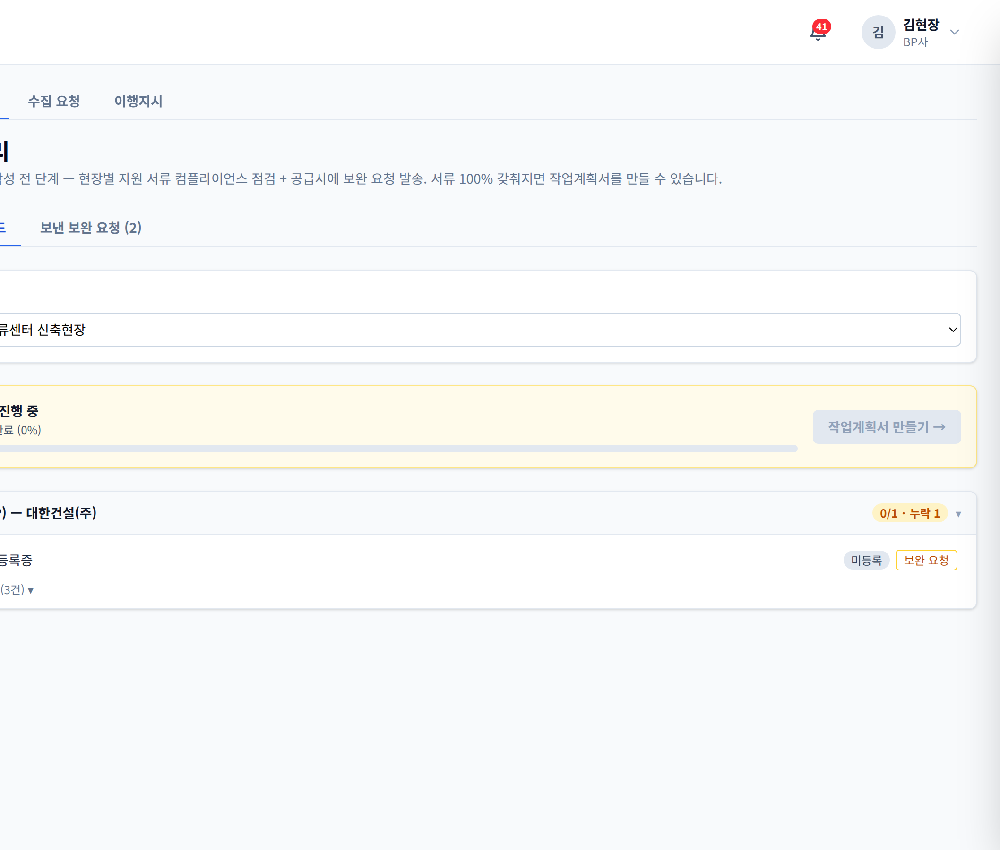
서류 관리 — 현장별 컴플라이언스 보드에서 자원별 서류 상태·보완 요청·만료를 한눈에
지능형 OCR자동차·건설기계 등록증, 운전면허, 화물·조종사 자격증, 안전교육 이수증 — 서식별 템플릿으로 필드 단위 추출. 회전·비뚤어진 폰 사진도 자동 보정.
정부기관 진위검증운전면허(경찰청)·화물자격(교통안전공단) 등 실시간 대조 — "검증완료" 배지는 실제 정부 응답입니다.
개인정보 보호주민번호 뒷자리 자동 마스킹 후 저장. 원본은 남기지 않습니다.
발주사(BP) 원스톱 심사
공급사가 제출한 서류 묶음을 다운로드 없이 웹에서 바로 열람 — 승인/반려 한 번에, 승인 즉시 작업계획서 프리필·반입검사 요청으로 연결됩니다.
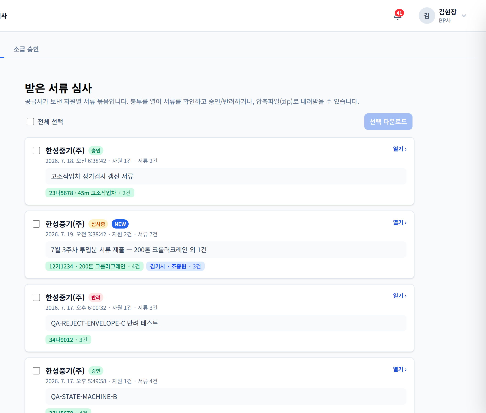
발주사 서류심사함 — 자원별 서류 묶음을 웹에서 바로 열람·승인/반려
- 장비 종류별·인력 역할별 필수서류 자동 체크리스트 (관리자가 종류별 설정)
- 만료 임박 자동 알림 — 만료 서류로는 투입 게이트가 열리지 않음
- 메일·알림톡으로 심사 도착 통보(웹 열람 링크 포함)
3
SKEP
② 작업계획서 자동화 — 업체를 바꾸지 못하던 이유를 없앴습니다
"계획서 다시 쓰기 귀찮아서" 기존 업체만 쓰는 현장의 락인 — SKEP은 계획서를 검증된 서류에서 자동으로 만들어 이 문제를 해소합니다.
L3 사전판정투입 전 4게이트(서류·검사·검진·교육) 자동 판정 — 무엇이 부족한지 행동형 문구로 안내.
L1 자동 생성OCR로 검증된 면허·등록증 값이 계획서에 자동 기입. 주·야 2인 편성, 첨부서류 실양식 순서로 자동 조립.
L2 원클릭 교체장비·조종원 교체 시 새 계획서 자동 복제 생성 + 원본 자동 종료. 같은 현장 기검증 자원은 업체변경 신청서만.
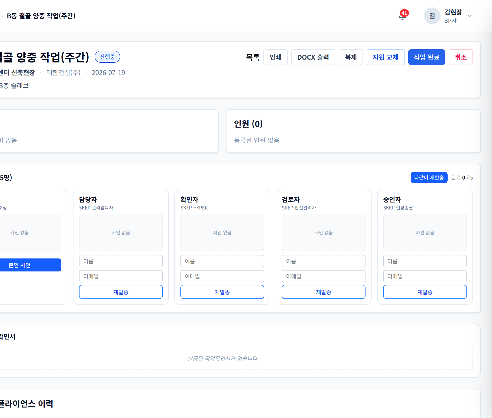
작업계획서 상세 — 자원·서명·게이트 상태 추적
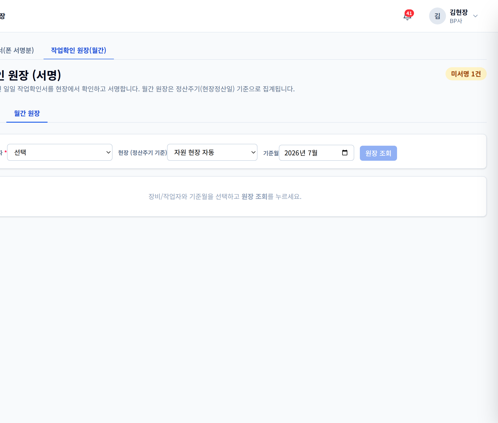
월간 작업확인 원장 — 정산주기·OT 5분류 자동 집계
서명 무결성: 내용이 바뀌면 전원 재서명을 서버가 강제합니다 — "사인만 유지한 채 내용 수정" 구멍이 원천 차단되어, 계획서가 법적 문서로서의 효력을 유지합니다.
작업 시작 — 출근부터 작업확인서까지
출근모바일 출근코드·위치확인
일일 안전점검NFC 태그 필수
작업워치 안전 감시
작업확인서디지털 서명/전표사진
월간 원장실양식 그대로 자동
일일 확인서는 현장 실무 그대로 — BP 담당자 캔버스 서명 또는 전표 사진 갈음. 월말이면 월간 원장이 실양식 그대로 자동 집계되고(정산주기 26일~25일, OT 5분류), 정산·거래명세서까지 숫자가 한 줄로 이어집니다.
4
SKEP
③ 안전 — 형식적 점검을 구조적으로 불가능하게
NFC 법정 일일점검
- 장비에 부착된 NFC를 실제 태그해야만 점검표가 열립니다 — 사무실 일괄 체크 원천 차단
- 법정 점검항목 템플릿 + 점검원 서명 + 시각·장비 바인딩 기록
- 미점검 장비는 작업 게이트에서 자동 차단
- 안전점검회사(별도 법인) 계정·점검원 관리 지원
기상 연동 자동 경보
- 기상청 연동 — 강풍 경보 시 고소작업 자동 중지 지시·기록
- 폭염 단계별(31/33/35℃) 휴식·작업제한 규칙 자동 적용
3등급 알림 — 놓칠 수 없는 구조
- 긴급: 무음모드 우회 + 전체화면 + 음성 읽어주기(TTS) + 반복 진동
- [확인] 응답 필수 — 5분 미확인 시 관리자 자동 에스컬레이션
- 누가 언제 확인했는지 전원 추적 — 미확인자 명단 실시간
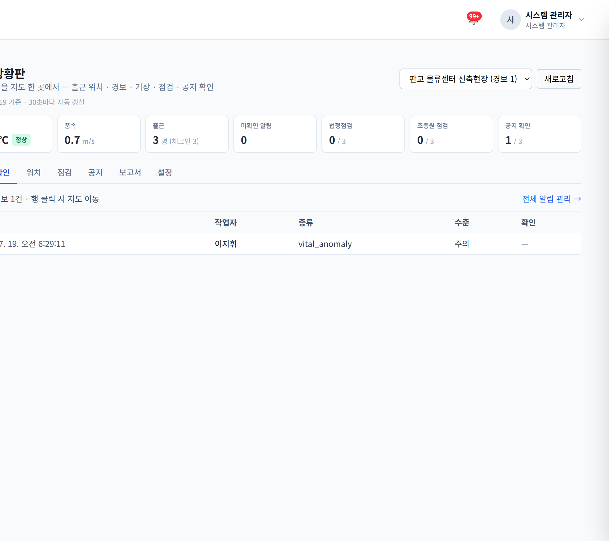
안전 상황판 — 체감온도·풍속·출근·미확인 경보·법정점검·공지 확인율이 한 화면에
증거사슬 — 중대재해처벌법 대응의 핵심은 "명확히 고지했고, 잘 관리했음"의 기록입니다. SKEP은 경보 발송→수신→확인→조치의 전 과정을 타임스탬프로 자동 보존하고, 안전관리 이행 보고서(확인율·평균 확인시간·미이행 목록·서명 인쇄본)를 원클릭 생성합니다.
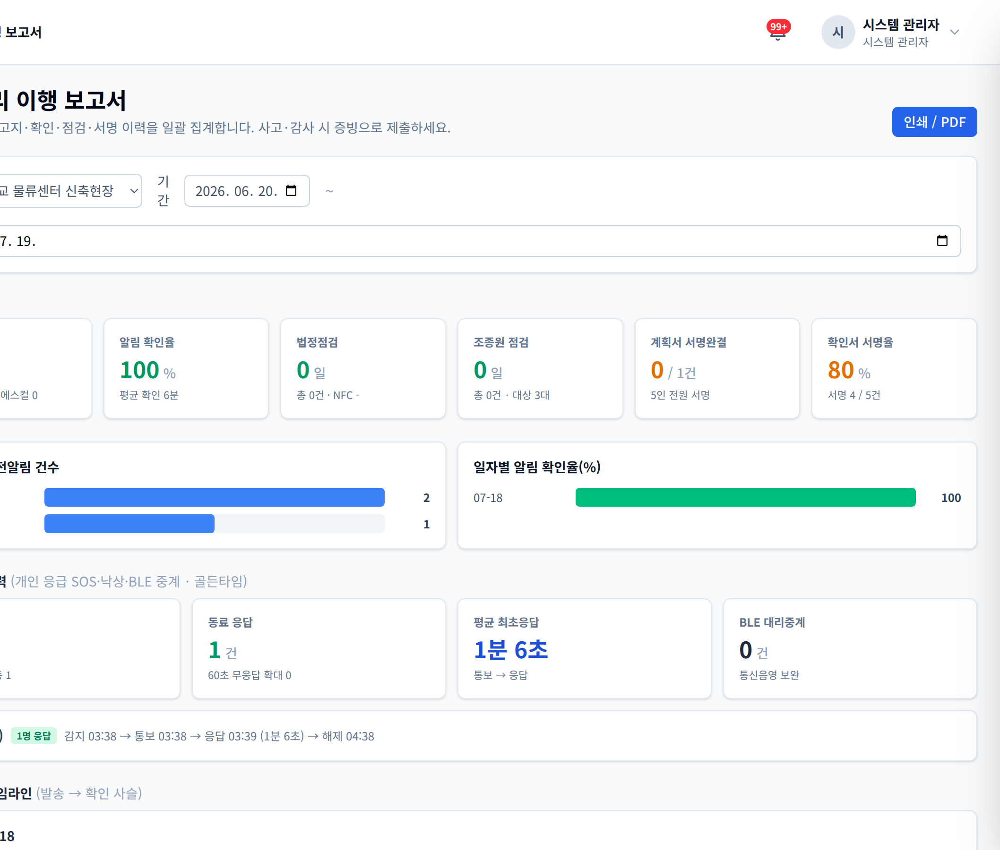
이행 보고서 — 확인율·긴급 대응 골든타임
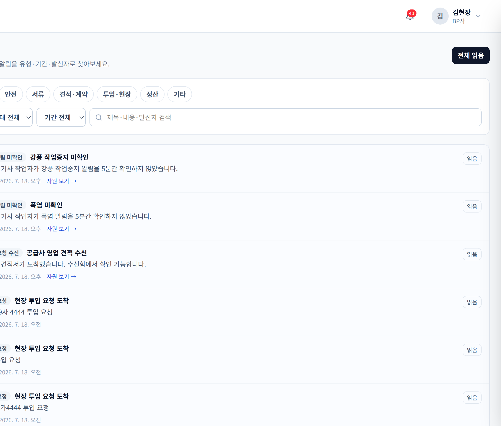
알림 센터 — 발신자·필터·확인 추적
5
SKEP
④ 스마트워치 안전 — 골든타임을 지키는 기술 특허 출원 준비 중
현장 최다 사고는 뇌출혈·심혈관계입니다. 발견이 몇 분 늦으면 예후가 달라집니다 — SKEP 워치는 그 몇 분을 지킵니다.
🔋 10시간 저전력 감시일반 소비자 스마트워치로 하루 종일 — 평상시엔 아껴 쓰고 위급 시엔 아낌없이 쓰는 지능형 전력 설계. 별도 전용 장비 구매가 필요 없습니다.
🧠 개인 맞춤 학습사람마다 다른 심박 특성을 학습해 그 사람 기준의 이상만 경보 — 쓸수록 오경보가 줄어듭니다. 폭염·작업강도 등 현장 맥락도 함께 판단.
📡 끊겨도 안전워치 신호가 일정 시간 끊기면 그 자체를 이상으로 감지해 확인 절차가 자동 가동 — 기기 꺼짐·이탈·통신 두절까지 관제가 압니다.
🆘 낙상·위급 자동 감지낙상 감지 시 본인 취소 기회(45초) 후 자동 발보. 본인 폰도 즉시 경보 — 서버·통신과 무관하게 작동.
👷 가장 가까운 동료에게위급 확정 시 근접 동료에게 우선 통보, "제가 갑니다" 응답을 관제가 실시간 추적. 무응답 시 자동 확대.
🔦 암흑에서도 찾습니다쓰러진 작업자의 폰이 사이렌 + 플래시 점멸로 위치를 알리고, 구조자 폰에는 접근 안내가 표시됩니다.
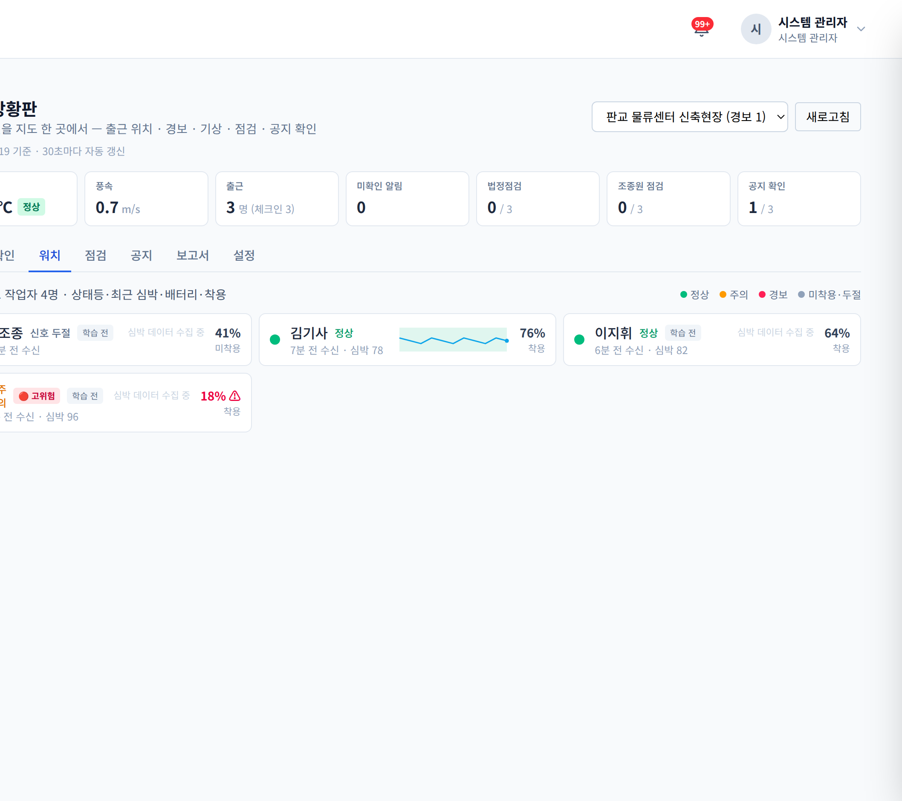
실시간 워치 모니터링 — 작업자별 상태등·심박 추이·배터리·착용·고위험 표시
한눈에 보는 건강·안전 대시보드
- 작업자별 상태등(정상·주의·경보·미착용)·마지막 수신·배터리를 관제 상황판에서 실시간
- 작업 전 혈압 체크인(현장 혈압계 연동) — 고위험 수치는 당일 고강도 작업 배제 권고·기록
- 건강검진 연계 고위험군 강화 관리 — 착용 우선·휴식 알림 강화·과로 경고
핵심 기술(저전력 감시 구조·개인 학습·동료 전파·무신호 구조신호 중계)은 특허 출원 준비 중으로, 본 자료에는 개요만 수록했습니다.
6
SKEP
⑤ 역할별 화면 — 각자에게 꼭 필요한 것만
원청(건설사) 관제
내 현장의 BP사·공급사·장비·인원·안전을 읽기 전용으로 통합 모니터링. 시간대별 현장 혼잡도로 점심·작업 시간 조정 근거까지.
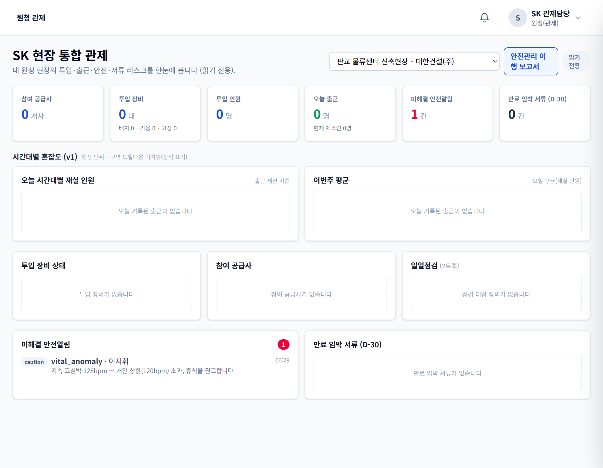
원청 통합 관제 — 공급사·장비·출근·안전·시간대별 혼잡도 (읽기 전용)
공급사·BP 업무 화면
- 오늘 할 일 대시보드 — 처리할 일이 행동형 카드로
- 자원 파이프라인 — 장비 1대의 서류→심사→투입 전 과정을 타임라인으로, 업체·장비별 필터
- 알림 센터 — 발신자 표시·유형/기간/검색 필터
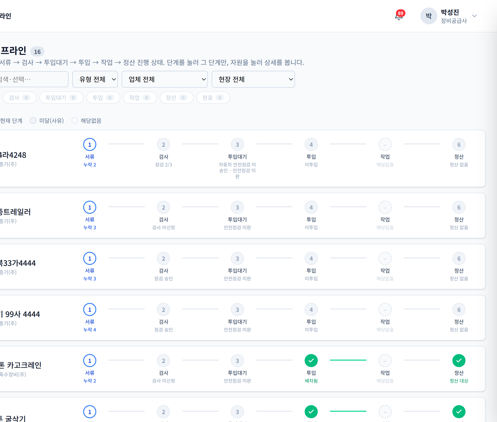
자원 파이프라인 — 장비 1대의 서류→심사→투입 전 과정 추적
작업자 모바일 — 내 일한 만큼, 한눈에
- 월 달력에서 정산주기(26일~25일) 단위로 근무일·OT가 한눈에
- 날짜를 누르면 그날 작업 내용·시간·서명 상태 상세
- 주기 합계(근무일수·OT 5분류·서명 현황) 큰 글씨 카드
- 별도 앱 설치 없이 출근코드로 바로 — 50대 작업자 기준 큰 글씨·큰 버튼
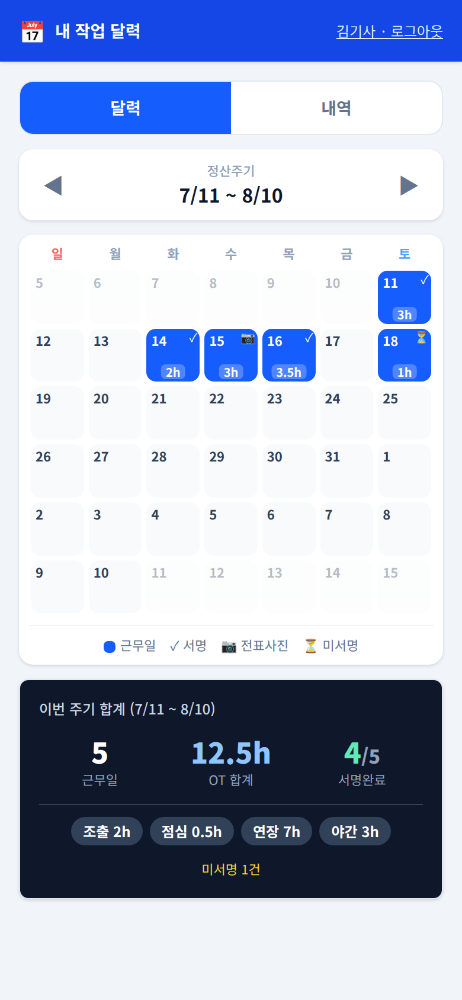
작업자 모바일 — 정산주기 달력·OT·서명 상태·주기 합계
7
SKEP
⑥ 쌓일수록 강해집니다 — 데이터가 만드는 진화
SKEP은 도입 첫날부터 쓸모 있지만, 진짜 가치는 시간이 만듭니다. 현장의 모든 기록이 구조화된 데이터로 쌓이면서, 프로그램이 현장에 맞춰 스스로 정교해집니다.
🧠 안전 지능 — 쓸수록 정확해지는 경보
작업자별 생체신호 기준을 학습해 그 사람 기준의 이상만 경보합니다. 오경보 응답이 쌓일수록 개인별 임계가 자동 보정되어 "경보 피로"가 줄고, 현장별 사고 전조 패턴이 축적되면 사고가 나기 전에 개입하는 예방 모델로 진화합니다.
📊 운영 지능 — 공정 계획의 근거
시간대별 혼잡도·장비 가동시간·작업 기록이 쌓이면: 점심시간 시차 운영, 장비 유휴 최소화, 공정 병목 파악 같은 현장 운영 의사결정의 데이터 근거가 됩니다. 감이 아니라 숫자로 현장을 계획합니다.
💰 비용 지능 — 견적·정산의 축적 효과
계약 단가 5분류·OT·정산 이력이 누적되면 다음 견적의 자동 제안 근거가 되고, 현장·장비종류별 실제 비용 구조가 보입니다. 주먹구구 단가 협상이 데이터 협상으로 바뀝니다.
🤝 신뢰 자산 — 협력사·인력의 이력서
업체별 서류 성실도·무사고 이력·점검 이행률·응답 속도가 기록으로 남아 우수 협력사를 데이터로 선별할 수 있게 됩니다. 성실한 업체가 손해 보지 않는 생태계 — 그것이 플랫폼의 장기 가치입니다.
그리고 이 모든 데이터는 법적 자산입니다 — 고지·확인·점검·대응의 타임스탬프 기록은 시간이 지날수록 "우리 현장은 안전을 이렇게 관리해왔다"는 누적 증명이 됩니다. 중대재해처벌법 시대에 이보다 확실한 자산은 없습니다.
8
SKEP
도입 효과
분→초
서류 심사 — 다운로드·출력·대조 없이 웹에서 즉시
자동
작업계획서·월간원장·정산 — 재작성·수기 집계 제거
기록
고지→확인→조치 증거사슬 — 중대재해처벌법 대응
| 항목 | 도입 전 | 도입 후 |
|---|
| 서류 진위 확인 | 사실상 생략(육안) | 정부기관 실시간 검증 + 만료 자동관리 |
| 작업계획서 | 교체 때마다 수기 재작성 → 업체 락인 | 자동 생성·원클릭 교체·서명 무결성 보장 |
| 일일 안전점검 | 일괄 체크·서명만(형식화) | NFC 태그 강제 + 미점검 작업 차단 |
| 위급 대응 | 발견 지연·구두 전파 | 워치 자동 감지 → 동료·관제 동시 전파(특허 출원 준비) |
| 안전 이행 입증 | 흩어진 수기 기록 | 이행 보고서 원클릭(확인율·타임라인·서명) |
도입 로드맵
| 단계 | 내용 |
|---|
| 즉시 (현재 제공) | 서류검증·심사, 작업계획서 자동화, 투입 파이프라인, 일일확인·월간원장·정산, NFC 법정점검, 기상 경보, 3등급 알림, 원청 관제, 작업자 달력 |
| 고도화 (출시 준비) | 스마트워치 저전력 상시 감시·무수신 감지·개인 맞춤 학습·동료 전파·파인드미 (특허 출원 준비 기술) |
| 확장 | 혈압 체크인 게이트·고위험군 건강 관리·iOS 앱 |
기존 현장에 당일 도입 가능 — 이미 통과된 자원의 소급 등록, 구두승인 기록, 견적 없이 서류심사부터 시작을 모두 지원합니다.
SKEP — 현장이 진짜로 쓰는 안전·투입관리 플랫폼
문의: (담당자·연락처 기입)
9